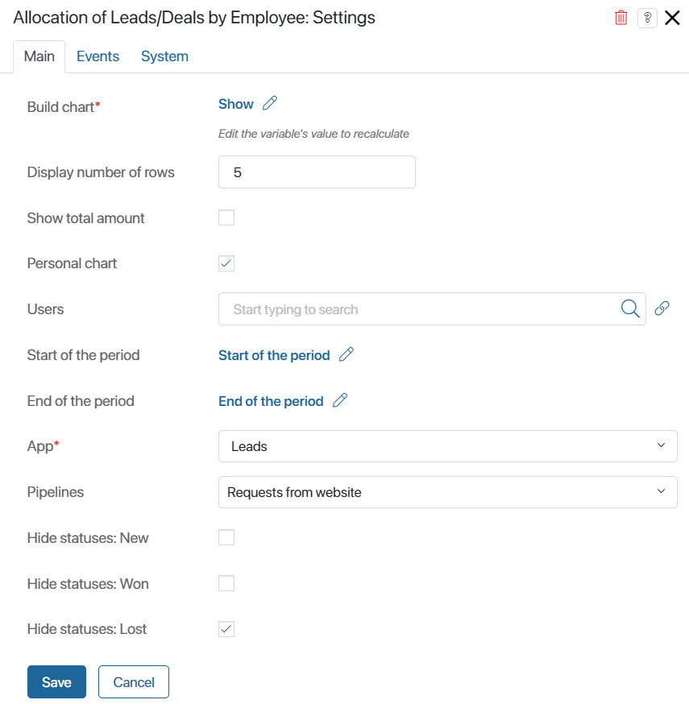
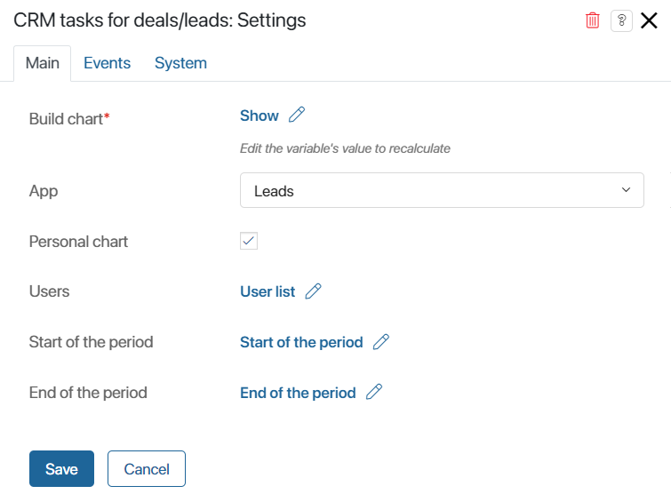
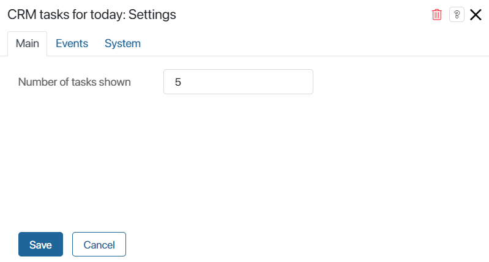

Преднастроенные в разделе CRM страницы с отчётами Дэшборд руководителя отдела продаж и Дэшборд сотрудника отдела продаж состоят из отдельных виджетов, настройки которых можно изменять.
Благодаря этому вы можете конфигурировать страницы под индивидуальные требования, принятые в компании. Например, можно использовать виджеты несколько раз для отображения различных данных, исключать ненужные элементы или дополнять страницы другими виджетами системы.
Кроме того, виджеты с отчётами можно добавлять на другие пользовательские страницы и отображать в них статистику из приложений раздела CRM.
начало внимание
Виджеты доступны при активации одного из платных решений CRM, в которые входит формирование дэшбордов. Работать с ними смогут только пользователи, у которых есть лицензия решения.
конец внимание
К виджетам дэшбордов относятся:
- Распределение Лидов/Сделок по сотрудникам;
- Воронка продаж – Лиды/Сделки;
- Топ сделок;
- Поступления цель/план/факт по сотрудникам (столбчатый);
- Поступления цель/план/факт по сотрудникам;
- Активности CRM по сделкам/лидам;
- Задачи CRM на сегодня.
начало внимание
Изменять внешний вид страниц с отчётами и настраивать виджеты могут только пользователи, входящие в группу Администраторы.
конец внимание
Настроить страницу с отчётами
Чтобы изменить текущие настройки внешнего вида страницы, выполните следующие действия:
- Перейдите в раздел CRM и в левом меню выберите страницу Дэшборд руководителя отдела продаж или Дэшборд сотрудника отдела продаж.
- Нажмите на значок шестерёнки рядом с названием страницы и выберите пункт Конструктор.
Страница откроется в дизайнере интерфейсов. На поле для моделирования вы увидите все виджеты, размещённые на ней.

- Выберите виджет и нажмите на значок шестерёнки рядом с его названием.
- Измените настройки в открывшемся окне.
Настройки виджетов включают в себя:
- поля, заданные по умолчанию и отвечающие за корректное построение отчёта. Их значения не рекомендуется изменять;
- опции, которые определяют внешний вид построенных графиков и списков и могут быть скорректированы.
- Для закрытия окна настроек виджета нажмите кнопку Сохранить.
- Чтобы настроенная страница стала доступна пользователям, нажмите Сохранить и Опубликовать на верхней панели дизайнера интерфейсов.
Вы можете добавлять виджеты на другие страницы системы.
Кроме того, графики на дэшбордах руководителя и сотрудника отдела продаж могут отображаться в одном виджете, если в настройки страниц вносились изменения. В этом случае необходимо вынести отдельные виджеты на дэшборды вручную.
Подробнее о том, как настроить отображение графиков, читайте в статье «Использование виджетов для дэшбордов на пользовательских страницах».
Рассмотрим подробнее виджеты, из которых состоят страницы с отчётами.
Виджет «Распределение Лидов/Сделок по сотрудникам»
Виджет размещён на дэшборде сотрудника и странице руководителя продаж дважды. Он отображает количество лидов или сделок, находящихся в каждом из статусов воронки. Для сотрудника отдела продаж на странице показываются только элементы, назначенные на него. Руководитель — может просматривать статистику по всем пользователям, ответственным за продажи.

- Построить график* — опция связана с переменной Построить, добавленной по умолчанию в контекст виджета. Когда пользователь нажимает кнопку Построить на странице отчёта, значение переменной меняется, и виджет автоматически отображает статистику по заданным в фильтрах параметрам. Изменять настройки опции не нужно;
- Отображать количество строк — определите высоту графика в строках: для дэшборда руководителя — это количество пользователей, данные по которым будут отображаться в отчёте, для дэшборда сотрудника — число выводимых статусов в воронке лидов или сделок;
- Отображать суммарное количество — опция предназначена для виджетов, размещённых на дэшборде руководителя отдела продаж. Включите её, чтобы на графике рядом с именем каждого пользователя отобразилось общее количество сделок или лидов у него в работе;
- Персональный график — опция включена для виджетов, размещённых на дэшборде сотрудника отдела продаж, и позволяет показывать статистику только по пользователю, который просматривает страницу;
- Пользователи — опция связана с переменной Список пользователей, добавленной по умолчанию в контекст виджета. Когда руководитель заполняет фильтр Ответственные на странице отчёта и запускает построение графика, значение переменной меняется. Виджет автоматически покажет статистику по выбранным пользователям. Изменять настройки опции не нужно. В настройках виджетов, размещённых на дэшборде сотрудника отдела продаж, это поле можно оставить пустым;
- Начало периода / Конец периода — опции связаны с переменными Начало периода и Конец периода, добавленными по умолчанию в контекст виджета. Значения переменных зависят от данных, указанных в одноимённых фильтрах при построении отчёта на странице. Изменять настройки опции не нужно.
- Приложение* — в поле указывается приложение, элементы которого будут показываться в статистике: Лиды или Сделки;
- Воронки — откройте выпадающий список, нажав на поле, и отметьте воронки, элементы из которых необходимо отображать в отчёте;
- Скрыть статус – Новые / Завершено успешно / Завершено неуспешно — отметьте флажком опции, чтобы в отчёте не показывались лиды или сделки в начальном и финальных статусах.
Виджет «Воронка продаж Лиды/Сделки»
Виджет используется дважды на дэшборде руководителя отдела продаж и отображает динамику перехода лидов или сделок в каждый из статусов в определённой воронке. Если в фильтре выбрана группа продаж, показатели всех сотрудников складываются.

- Построить график*, Пользователи, Начало периода, Конец периода — опции связаны с контекстными переменными виджета и позволяют строить график по данным из фильтров на странице. Изменять настройки опций не нужно;
- Представление данных — выберите, каким образом будет показываться статистика по переходу лидов и сделок в каждый из статусов: в процентах или в единицах;
- Приложение* — в поле указывается приложение, элементы которого будут показываться в статистике: Лиды или Сделки;
- Воронки — откройте выпадающий список, нажав на поле, и отметьте воронки, элементы из которых необходимо отображать в отчёте.
Виджет «Топ сделок»
Виджет используется на дэшборде сотрудника и странице руководителя продаж и показывает наиболее прибыльные планируемые сделки. Данные строятся на основании бюджета, указанного в сделках.

- Построить график*, Пользователи*, Начало периода, Конец периода — опции связаны с контекстными переменными виджета и позволяют строить график по данным из фильтров на странице. Изменять настройки опций не нужно;
- Отображать количество сделок — укажите число элементов, которые будут показываться в отчёте;
- Отображать имена пользователей — отметьте опцию флажком, чтобы напротив названия каждой сделки в топе указывался ответственный за неё сотрудник.
Виджет «Поступления цель/план/факт по сотрудникам (столбчатый)»
Виджет используется на дэшборде руководителя отдела продаж и позволяет посмотреть текущие показатели поступлений по цели, плану и факту для каждого выбранного сотрудника.

- Построить график*, Пользователи*, Начало периода, Конец периода — опции связаны с контекстными переменными виджета и позволяют строить график по данным из фильтров на странице. Изменять настройки опций не нужно;
- Отображать количество строк — определите высоту графика — количество сотрудников, данные по которым будут отображаться в отчёте.
Виджет «Поступления цель/план/факт по сотрудникам»
Виджет используется на дэшборде сотрудника отдела продаж и показывает индивидуальные показатели поступлений по цели, плану и факту.

Опции Построить график*, Начало периода, Конец периода связаны с контекстными переменными виджета и позволяют строить график по данным из фильтров на странице. Изменять настройки опций не нужно.
Виджет «Активности CRM по сделкам/лидам»
Виджет используется на дэшборде сотрудника отдела продаж и отображает статистику по задачам CRM, назначенным на пользователя, по лидам или сделкам.

- Построить график*, Пользователи*, Начало периода, Конец периода — опции связаны с контекстными переменными виджета и позволяют строить график по данным из фильтров на странице. Изменять настройки опций не нужно;
- Приложение — в поле указывается приложение, по элементам которого будет показываться статистика задач: Лиды или Сделки;
- Персональный график — при включённой опции график отображает данные только по пользователю, который просматривает страницу.
Виджет «Задачи CRM на сегодня»
Виджет используется на дэшборде сотрудника отдела продаж и показывает запланированные на текущую дату звонки, письма, встречи и вебинары, назначенные на текущего пользователя.

В поле Отображать количество задач укажите, сколько задач CRM будет видеть ответственный сотрудник в отчёте.
Настройки на вкладках «События» и «Системные»
На этих вкладках, одинаковых для всех виджетов, задаются системные настройки. Они позволяют управлять видимостью виджетов и доступом к ним, настраивать их поведение при наведении курсора и т. д. Подробнее об этом читайте в статье «Системные настройки виджетов».